使い方
都営交通中心のルート検索から、乗車中の案内、行き先探し、同行者とのおでかけ共有まで。主な機能を画面例といっしょに紹介します。
都営交通中心のルートを探す
出発地と目的地を指定し、使いたい交通手段に合わせてルートを検索します。
現在地を出発地にすることもできます。出発日時も必要に応じて変更できます。
「都営地下鉄・バス」または「都営バスのみ」を選びます。
所要時間、乗換回数、徒歩距離、待ち時間などを見ながら候補を選びます。
徒歩・乗車・乗換の順番や地図を確認して、おでかけを始めます。
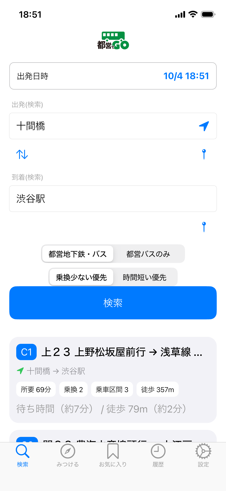
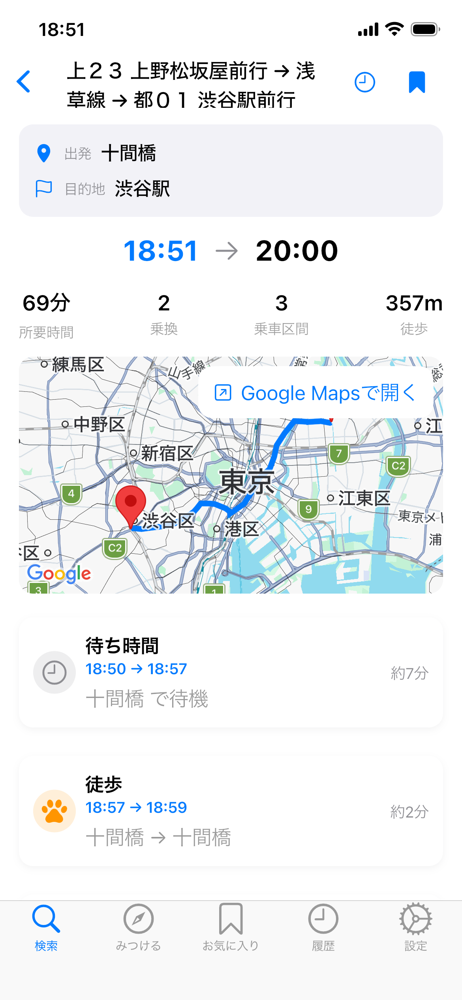
乗ってからも、次がわかる
乗車中は、次の停留所や降りるタイミングを確認できます。
選んだ経路に沿って、徒歩・乗車・乗換など現在の移動を確認します。
バス乗車中は、次の停留所や残りの停車回数を表示します。
降車が近づいたら、大きな表示で降りるタイミングを確認できます。
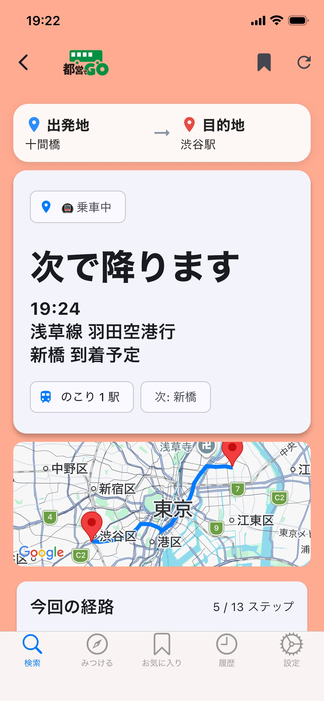
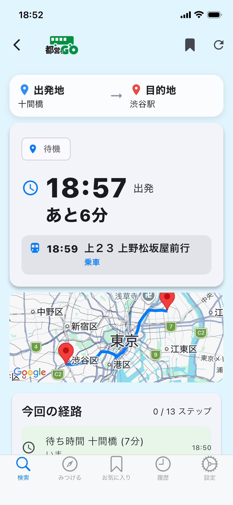
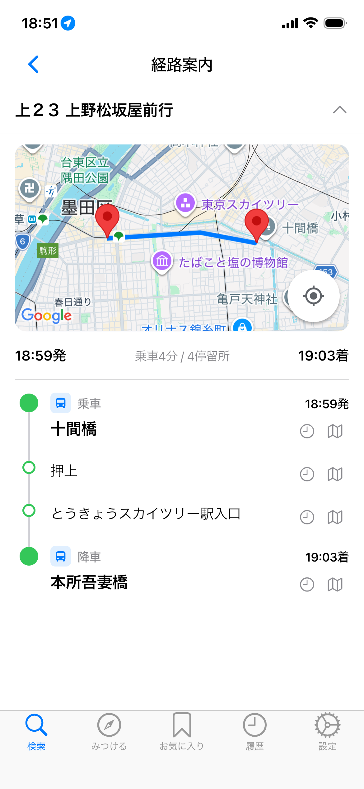
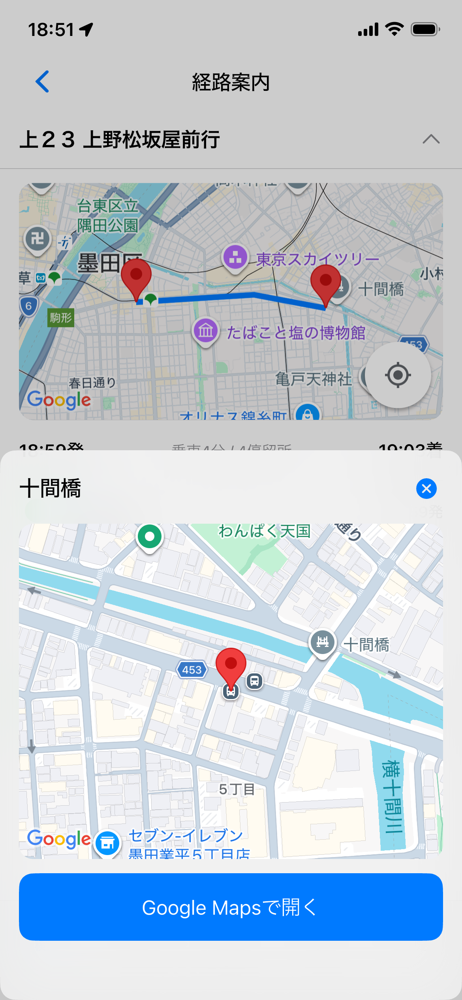
「どこへ行こう？」から探す
目的地が決まっていないときは、現在地の近くから乗り換えなしで行ける場所を探せます。
現在地付近の駅やバス停を起点に、行き先候補を探します。
乗り換えなしで行ける駅・バス停から、気になる場所を選びます。
写真や周辺情報を見て、行ってみたい場所を選び、そのまま経路検索につなげられます。
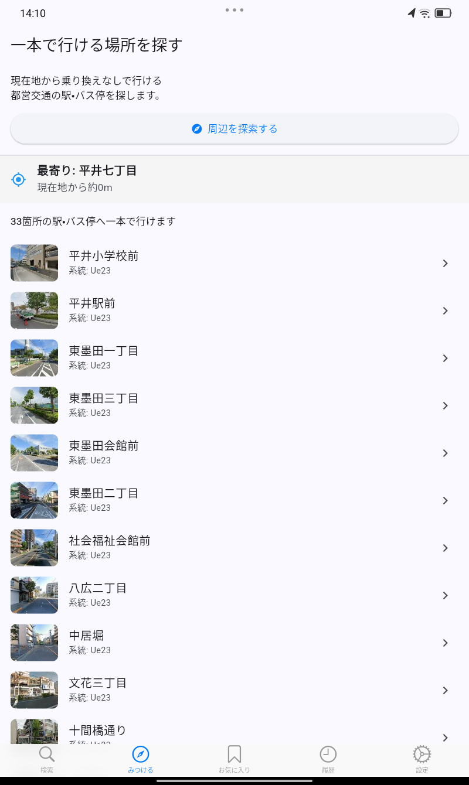
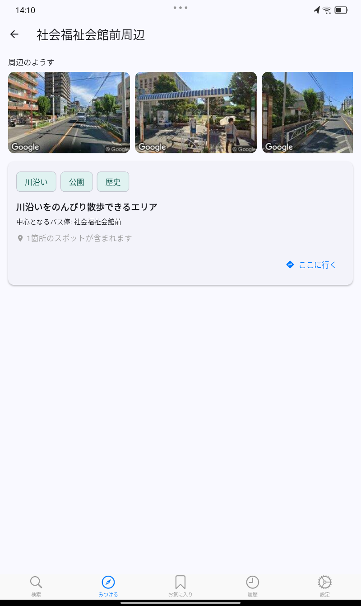
みんなでおでかけ
同行者と同じ予定を共有し、集合から到着まで「次に何をするか」をそろえて確認できます。
集合、徒歩、乗車、到着など、その日の予定をひとつのしおりにまとめます。
おでかけには参加コードが表示されます。同行者は同じしおりを確認できます。
集合場所や次の予定を見ながら、同じ行程に沿って移動します。
予定の追加や時間の調整を行い、その日の外出に合わせてしおりを更新できます。
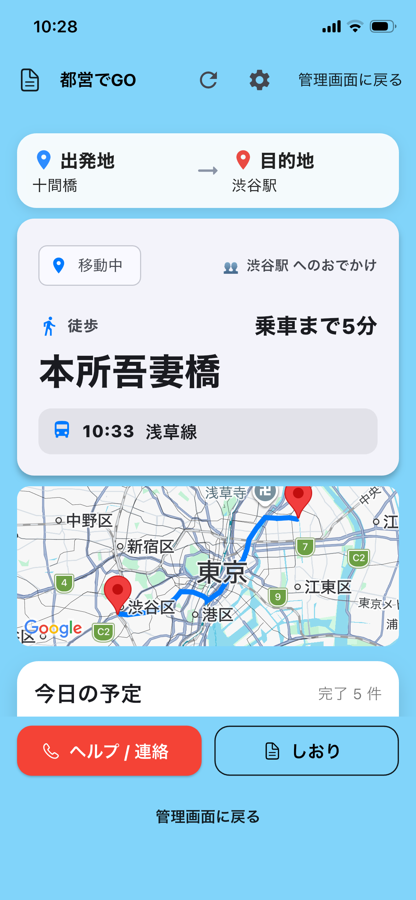
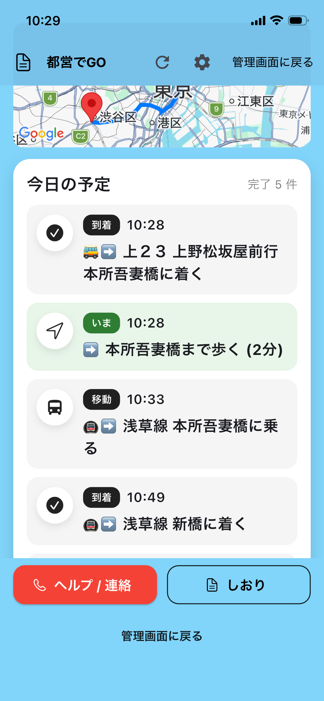
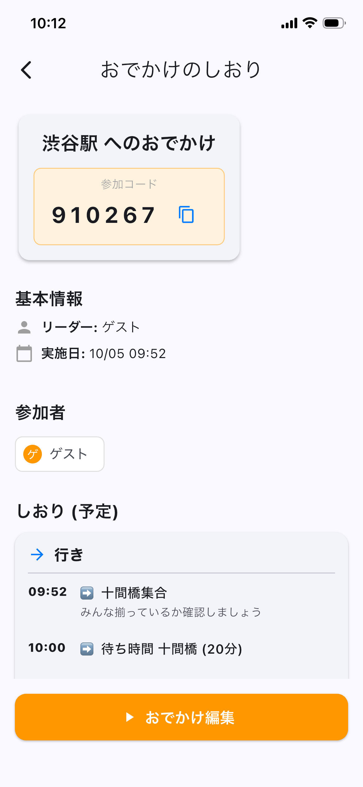
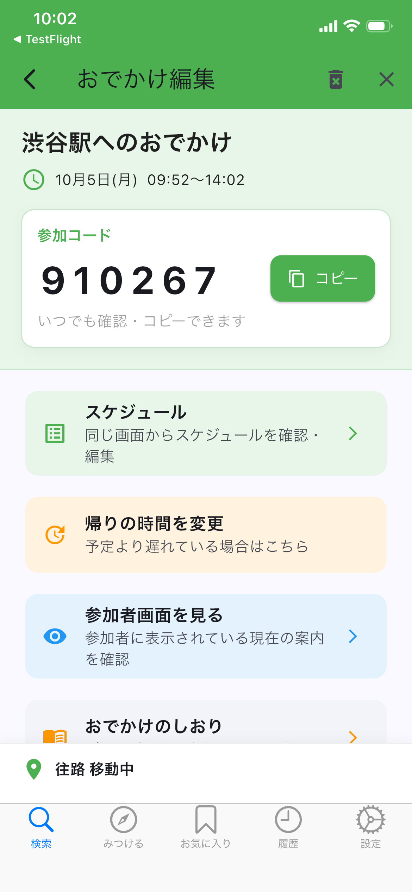
困ったときは
うまく動かない場合は、まず端末の設定とアプリの状態をご確認ください。
位置情報が取得できない
端末の位置情報サービスが有効で、「都営でGO」に位置情報の利用が許可されているか確認してください。
ルートや時刻が実際と異なる
運休・遅延・臨時変更などがあります。最新の運行情報は東京都交通局などの公式情報も確認してください。
表示や動作に問題がある
アプリを終了して再起動し、利用可能な最新版へ更新してください。解決しない場合は不具合をご連絡ください。
制度の対象・利用条件を確認したい
シルバーパスや無料乗車券などの条件は変更される場合があります。制度そのものについては公式情報をご確認ください。